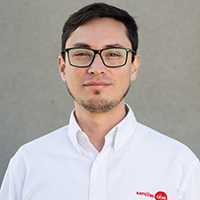

Patricio Henriquez | WDD 130
Hi!, i'm Patricio from Chile, I was born in Talcahuano, and lived in so many cold places. One of those places was Puerto Williams, located south of my Country, very close to antartica. Since my childhood i love playing video games and i saw my dad using a personal computer, wich he could connect to internet in 1998. From that day to today, i was involved in the technology enviroment and i loved it. I'm very passionate with studies, so every day i learn somethinh new.
I'm the older of three siblings. My brother, the middle one, works as a Aerial controller, and my sister, the youngest, works as Police. I meet in 2013 who ended becoming my actual wife. I'm married since 2022 and i'm very happy with my life.